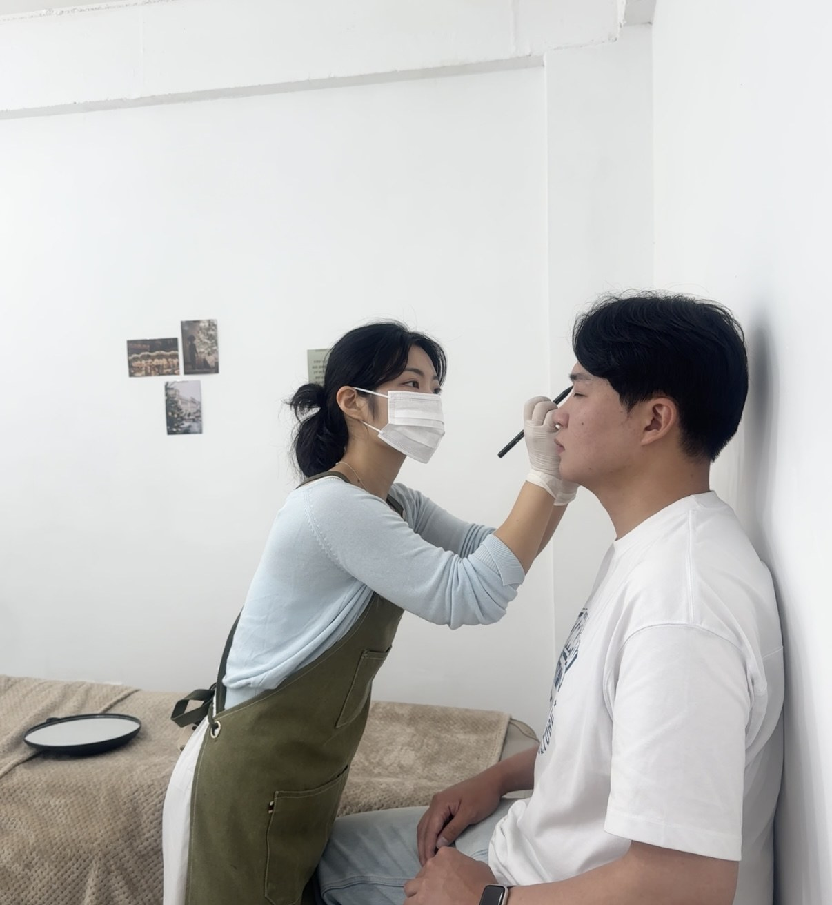
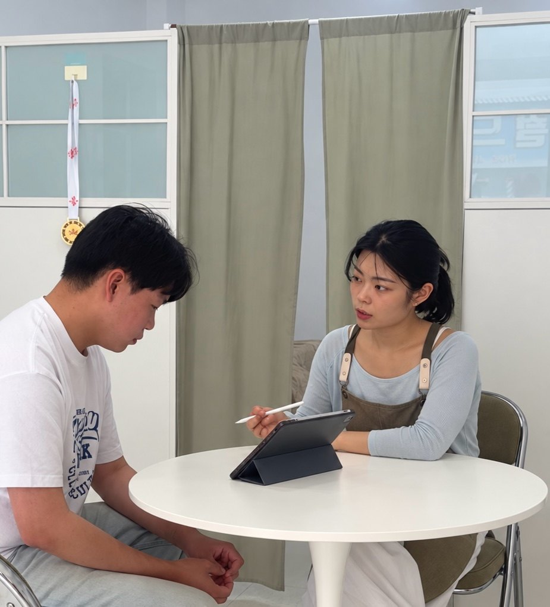
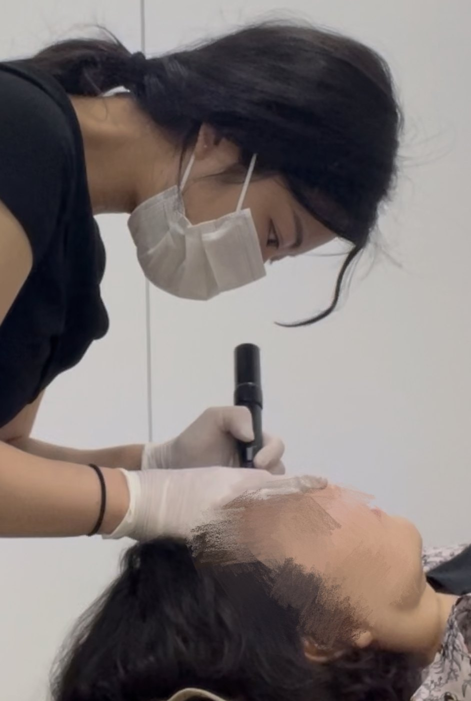
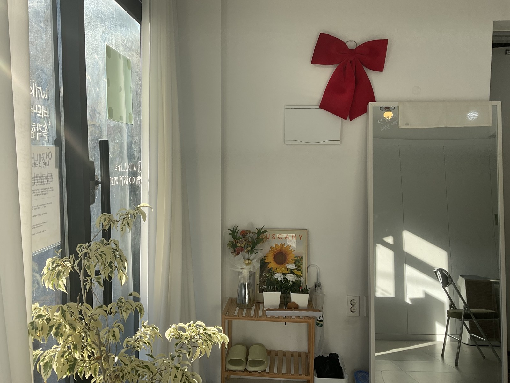
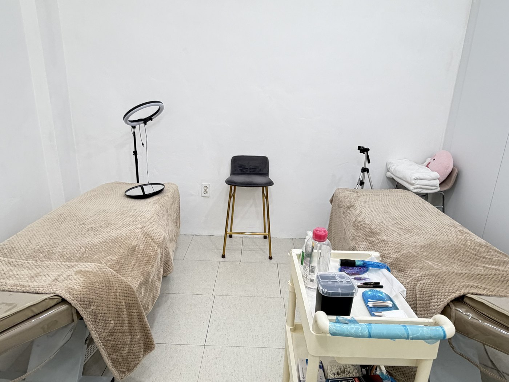
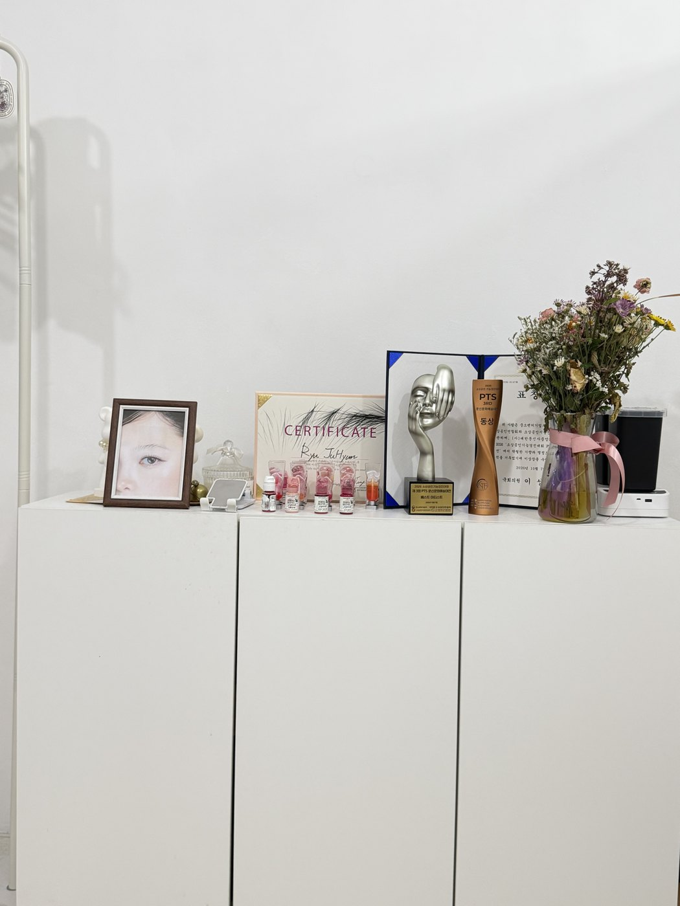

그릴 때마다 달라지는 모양
양쪽을 맞추려다 점점 진해지고,
어느 선이 맞는지 헷갈렸다면.
5,000명 이상 시술 경험과 노하우로,
처음부터 실패 없는 나만의 눈썹을 찾아보세요.
광주 서구 · 류주현 원장 1:1 맞춤 상담
눈썹의 모량과 자라는 방향, 눈매와 얼굴의 균형은 모두 다릅니다.
색을 채우기 전에, 지금 내 눈썹에서 무엇이 필요한지 살펴야 합니다.
양쪽을 맞추려다 점점 진해지고,
어느 선이 맞는지 헷갈렸다면.
채우고는 싶은데 눈썹만
도드라져 보일까 망설여진다면.
다시 덮어도 될지, 어떤 기법이
어울릴지 먼저 알고 싶다면.
윌로우라인은 그 고민을 듣는 것부터 시작합니다.

정해진 모양을 그대로 얹지 않습니다. 원하는 분위기를 듣고, 기존 눈썹과 피부 상태를 확인한 뒤 어울리는 디자인과 기법을 제안합니다.
얼굴과 눈매골격과 근육의 움직임, 전체적인 인상을 함께 봅니다.
모량과 결 방향남아 있는 눈썹과 어우러지도록 굵기·간격·흐름을 고려합니다.
피부와 기존 잔흔현재 상태에 맞는 기법과 진행 방향을 충분히 안내합니다.
“그럼 우리 딸이 배워서 아빠 해줘.” 아버지의 눈썹을 더 자연스럽게 해드리고 싶던 마음으로 배움을 시작했습니다. 지금도 그 마음으로 한 분 한 분에게 어울리는 눈썹을 고민합니다.
어떤 기법이 좋은지 공부해 오지 않으셔도 괜찮습니다. 원하는 느낌과 걱정되는 부분부터 알려주세요.


기존 경험과 원하는 느낌, 걱정되는 부분을 나눕니다.
모량과 결 방향, 골격과 피부·잔흔을 살핍니다.
어울리는 디자인과 기법을 설명하고 피부 반응을 살피며 진행합니다.
회복과 관리 방법, 착색을 확인하는 2차 작업 과정을 안내합니다.
2차 작업의 일정·포함 범위·비용은 예약 전 상담에서 확인해 주세요.
내 눈썹과 비슷한 사례를 살펴보세요.
전체 모양과 가까이서 본 결을 함께 확인할 수 있습니다.
윌로우라인 실제 시술 사례입니다. 전후 비교 사진은 위가 시술 전, 아래가 시술 후이며, 디테일 사진은 별도로 표시했습니다. 피부 상태·기법·회복 시점에 따라 색감과 결과에는 개인차가 있습니다.
처음이라 망설여지는 건 당연합니다.
내 상태에 대한 답은 상담에서 함께 확인해 주세요.
모량과 결 방향, 얼굴의 전체적인 조화를 고려해 디자인합니다. 시술 직후에는 색감이 진하게 느껴질 수 있으며 회복과 탈각을 거치며 부드러워집니다. 초기 변화와 관리 방법도 함께 안내합니다.
피부 민감도와 컨디션에 따라 느끼는 정도가 다릅니다. 걱정되는 부분을 미리 알려주시면 피부 반응을 살피며 무리하지 않는 범위에서 진행합니다.
잔흔의 색과 진하기, 형태와 피부 상태에 따라 달라집니다. 현재 눈썹 사진으로 먼저 상담해 주세요. 덮는 것이 적합한지, 색을 옅게 하는 과정이 먼저 필요한지 안내합니다.
자연눈썹(엠보)과 헤어스트록은 별도 기법이며 가격도 다릅니다. 모량·피부·잔흔과 원하는 느낌을 살펴 제안합니다. 이 페이지의 13만 원 이벤트는 자연눈썹(엠보) 기준입니다.
2차 작업의 포함 여부·일정·비용은 예약 전에 상담에서 확인해 주세요. 촬영이나 결혼식 등 중요한 일정이 있다면 가능하면 3~4주 여유를 두고 미리 알려주세요.
상담과 디자인 과정에 대한 실제 경험은 네이버 플레이스에서 직접 확인할 수 있습니다.
자연눈썹(엠보) 이벤트
정상가 16만 원 → 13만 원.
피부와 기존 잔흔에 따라 시술 방향이 달라질 수 있습니다.
리터치 포함 여부와 상세 예약 조건은 상담 시 안내드립니다.
엠보 · 본래의 결을 살린 표현
자연눈썹 이벤트
상담과 작업에 집중할 수 있도록, 고객별 위생관리와 공간의 청결을 기본으로 지킵니다.



방문 전 네이버 플레이스에서 위치를 확인해 주세요.
현재 눈썹 사진과 원하는 느낌을 보내주세요.
어떤 디자인과 기법이 맞을지 함께 찾겠습니다.